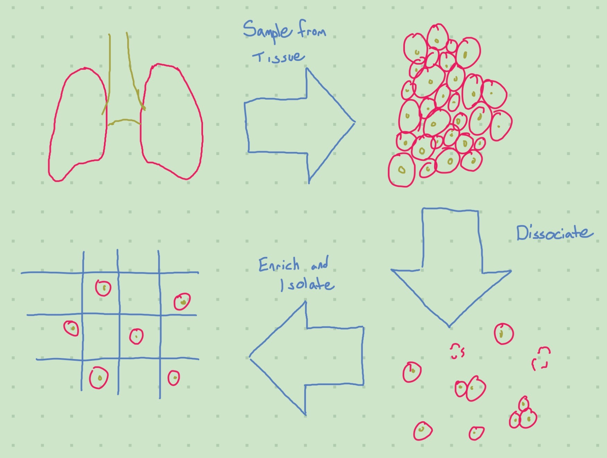

Overview of scRNA-seq Data Creation – Cell Isolation
Omics Data
I work with single-cell RNA sequencing data (scRNA-seq), but I don’t really understand it… ELI5 is that scRNA-seq data is a list of cells, each of which has a list of genes in that cell. The goal of this blog post is to arrive at an understanding of these.
A useful resource is the eBook from Single-Cell Sequencing Workflow: Critical Steps and Considerations (2019) outlining the scRNA-seq workflow. Illumina is one of the companies that creates products that make scRNA-seq possible.

Tissue Preparation
The first step in scRNA-seq analysis is to procure the actual samples for the analysis. It is perhaps the most important step, as the tissue preparation method can bias your results (some cells may be better suited to surviving certain preparation methods intact, for example). It also tends to be easier to collect “less clumpy” cells, like blood cells.
This makes intuitive sense, as we would need some way of reaching the cells inside a clump to prevent biasing our results towards cells that tend to inhabit the surface of a clump. Reaching these cells is called dissociation. For an example of how the dissociation protocol can effect the cells you get, see Denisenko et al. (2020).
The goal of dissociation is to break bonds between cells (to destroy the aforementioned clumps). These bonds can be broken mechanically or enzymatically, or through a combination of both. Bonds can also be broken via the manipulation of temperature. For an example of a dissociation protocol, see Quintanal-Villalonga et al. (2022).
The next (optional) step is enrichment. We do this to remove unwanted cells or boost the presence of wanted ones.
After preparing the sample, we want to ensure the sample is high quality. I’ll summarize what Single-Cell Sequencing Workflow: Critical Steps and Considerations (2019) has to say on the matter:
- We want to ensure that our dissociation and enrichment methods have not killed too many cells. We can detect residue from dead cells to acquire an estimate, and it seems in practice the standard is to have >85% viable cells.
- If our cells got broken to pieces, or if we failed to split cells up well, we would expect this info to be observable in a cell size distribution histogram.
- We want our cells to be concentrated at the right amount.
One method of getting these methods is flow cytometry.
Cell Isolation
Once we’ve prepared our tissue, we need to isolate the cells from eachother. (Dissociation breaks up clumps, but that does not mean the de-clumped cells are isolated - they’re still together in the same solution).
A key distinguisher between isolation methods is throughput. Older (mechanical) methods have low throughput, and can only feasibly isolate cells from a sample of size up to the thousands. More modern “high-throughput” methods can dramatically increase this. The methods mentioned in Single-Cell Sequencing Workflow: Critical Steps and Considerations (2019) are briefly listed here:- Low throughput
- Serial dilution
- Mouth pipetting
- Robotic micromanipulation
- Laser capture microdissection
- FACS
- High throughput
- Microfluidics circuits
- Droplet fluidics platforms
- Microwells
- Combinatorial indexing
Understanding the ins-and-outs of these methods, and the extent to which this list is exhaustive, is a story for another time.